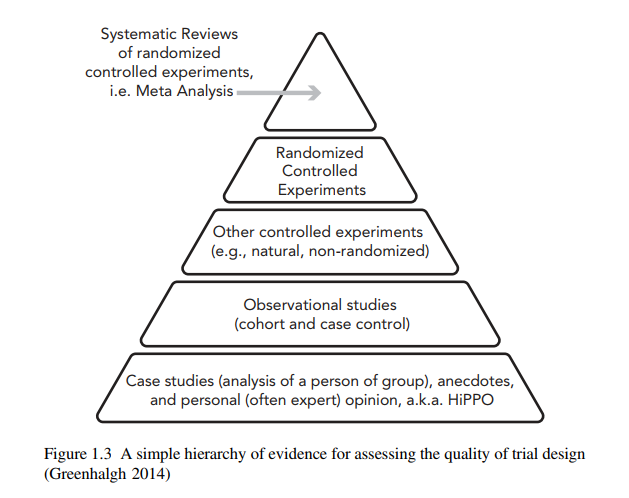
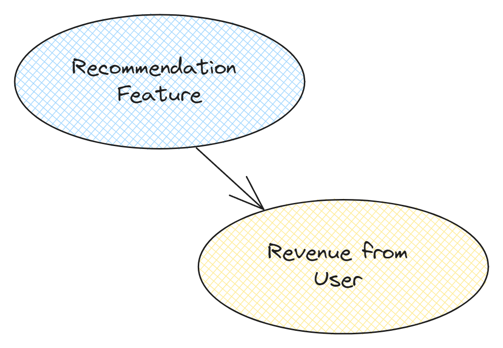
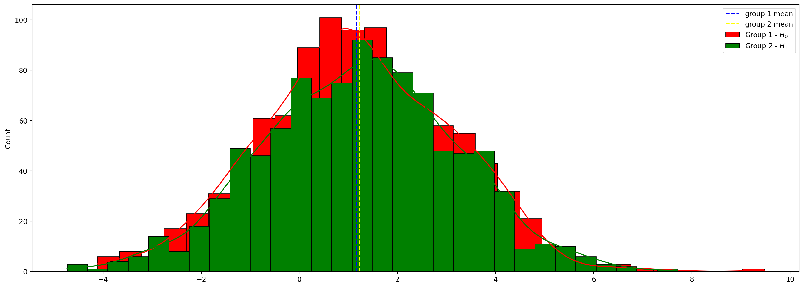
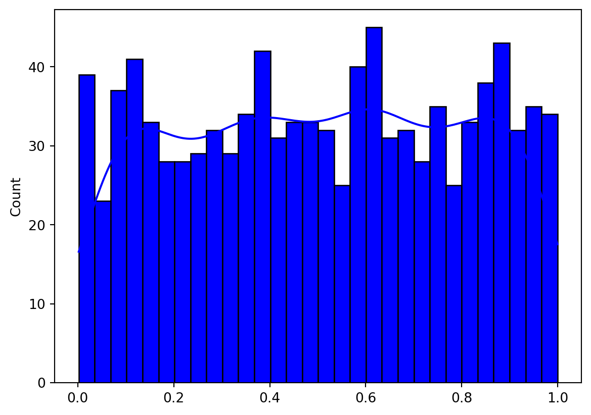
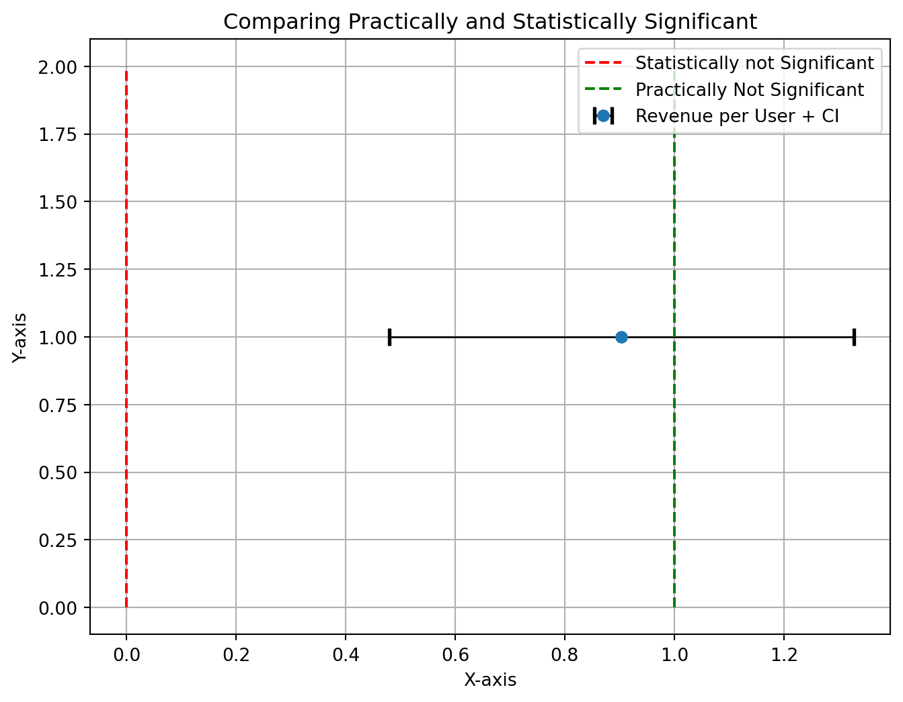

Measuring Effect of Product Recommendation Initiative to decide whether to launch feature to all user¶

PT Buah Alam , is an online grocery store that are currently growing at an grow stages of startup, to reach profitability they need to make a move. One of the eandeavor by approaching by boosting sales on platform.
How to do that ? There are lot of ways. One of them through upselling / cross selling
The Data Science Team already developed the recommendation algorithm in checkout pages

Here's a catch :
-
If we implement new initiative to all of our user , the cost is too big and does not guarantee better marketing performance
-
If we implement don't implement / atleast try, we have opportunity cost , "maybe" this initiative works well and yield better marketing performance
Solution ?
There are several ways to prove causality / causal relationship

One of the most reliable tool is through Randomized Control Trial (RCT)
For example, we want to estimate the effect on changing call to action in payment button

However there are still other potential cause or what we called as confounding variable.

To remove the bias , we could add randomization to make other confounder equal , by assignming randomly which user get button change

That the basic idea of Randomized Control Trial or commonly called as A/B Test
So when does the A/B Test works ?
-
When each experiment unit doesnot interfere / influence other experiment unit (Stable Unit Treatment Value Assumption) For example in marketplace where there is network effect
-
When assigning experiment is possible (for example it's unethical to assign people to get lower education)
-
When period is too long For example experimenting on ads campaign to measure number of deals made for property housing
So is it possible in our case ? Yes ! It's possible because :
-
Each user can be assigned to different feature
-
Each user doesnot interfere with other users
-
The period to measure causal impact still feasible
So how do we do A/B test? Don't worry here is the steps :

1. Setting Up Problem¶
Our focus is about increasing revenue ? But which revenue ? There are lot of revenues. The Revenue we are using is from user transaction because we can intervene on it.
After that we should have idea what is the current funnel / user journey in buying phase

After that we should decide what metrics as our target of experimentation. Back to our goal this recommender system initiative to boost revenue. Spesifically Revenue from User Transaction. Hence our metrics is Revenue per User
2. Designing Experiment¶
2.1. Experiment Unit¶
Our Experiment unit is user level , but which user since the recommendation system is located checkout process , our user pool is user who proceed into checkout process
2.2. Group¶
- Control Group : Users who dont receive product recommendation during checkout process
- Treatment Group : User who receive product recommendation during checkout process
2.3. Hypothesis¶
We want to check if revenue per user for treatment group is > control group
\(H_0 = \mu_{control} >= \mu_{treatment}\)
\(H_1 = \mu_{control} < \mu_{treatment}\)
Our statistical test aim to prove the hypothesis whether it is rejected or fail to reject
2.3. Number of Samples¶
As Information , we have 15 Million Active User , with median monthly in-checkout-process user of 20.000 . We use median because number of user in checkout process is vary.
So how many number of user we need for both treatment and control ? Well it's depend on Treatment Effect you want to capture , the smaller the effect you want to capture the more sample we need to add because of the experiment precision
Decision to role out new feature based on whether new initiative meet certain criteria such as :
-
Statistically Significant We'll talk about it later
-
Practically Significant Related to Business Requirement
2.3.1 Business Requirement¶
Our new initiative by recommending purchase is indeed costly, we have to calculate the cost first
2.3.1.1. Cost of Making Recommendation¶
-
Man Power The Development process assumed in six month , people that are involved :
-
Data Scientist , assume monthly rate $ 8000 to $ 12000 / month x 6 month = $ 48.000 - $ 72.000
-
Data Engineer , assume monthly rate $8000 to $12000 / month x 6 month = $48.000 - $72.000
-
MLOps , assume monthly rate $9000 to $10000 / month x 6 month = $45.000 - $60.000
-
Software Engineer , assume monthly rate $9000 to $10000 / month x 6 month = $45.000 - $60.000
Development Cost Development Cost Role Lower Bound Cost Upper Bound Cost Data Scientist 48000 72000 Data Engineer 48000 72000 MLOps 45000 60000 Software Engineer 45000 60000 Total Cost 186000 264000
-
-
Cloud to handle ~ 100k users per day x 30 day, another information is that the calculation is in batch manner, we don't need real time recommendation yet. Let say the cost isUSD \(1000-2000 per month x 12 month =\)1.000 -$24.000 annualy
-
Cost Summarization
| Cost Attribute | Lower Bound Cost | Upper Bound Cost |
|---|---|---|
| Development Cost | 186000 | 264000 |
| Annual Infra Cost | 12000 | 24000 |
| Total | 198000 | 288000 |
2.3.1.2. Reasonable Revenue¶
We have seen that in order to make recommender system is not cheap at this scale, hence at what incremental level should we roll out this feature to all user ? Of Course covering costs + expected increase in user revenue.
About cost we have already know let say we take USD 288,000 , what about expected increase in user revenue. As per now median per user revenue was about USD 1 daily. Median of monthly user checkout 100.000 user minimum revenue should be \(Revenue >= 288.000\)
Current Revenue per User/ annual = 1 x 20.000 x 12 = USD 240.000 Gaps = Not Yet Covered Cost + Expected Growth USD 48.000 / (12 x 20.000 ) = USD 0.2
Revenue / User / Daily >= USD 1.2
If we continue to success we can have USD 1 increase from USD 1 to USD 2 We can have Additional Revenue of
First Year
2-1.2 x 20.000 x 12 = USD 192.000
Second Year or more
2 x 20.000 x 12 - (Annual Infra Cost)
2 x 20.000 x 12 - (24.000) = USD 456.000
So in this case we have to able to detect USD 1 Change in revenue per user. This will relate to the next problem which is power Analysis
2.3.1 Power Analysis¶
In statistical testing there are two possible Errors :
- Rejecting when it should failed to be Rejected, or (Type I Error)
- Fail to Reject when it should be Rejected or (Type II Error)
Typically Type I Error influence what we called as significance level or \(\alpha\). While the second one is influenced by Power \((1-\beta)\)
Will be focusing on Power Analysis
- Power is the probability to reject \(H_{0}\) given \(H_{0}\) is false.
- Power is dependent to Factor such as
- Effect size
- Data variance
- Sample size (\(n\))
We will simulate how above mentioned factor related to power
import pandas as pd
import numpy as np
import matplotlib.pyplot as plt
import seaborn as sns
import math
import scipy.stats as stats
def generate_data(mu_1,mu_2,std_dev_1,std_dev_2,n_sample_1,n_sample_2, N=10000, n_repeat=1000):
# generate data
data_1 = np.random.normal(mu_1, std_dev_1, N)
data_2 = np.random.normal(mu_2, std_dev_2, N)
sample_1_mean = []
sample_2_mean = []
for i in range(n_repeat):
# Generate data
sample_1 = np.random.choice(data_1, size=(1, n_sample_1), replace=False)
sample_2 = np.random.choice(data_2, size=(1, n_sample_2), replace=False)
# obtain mean
mean_1 = sample_1.mean()
mean_2 = sample_2.mean()
# Append mean to the list
sample_1_mean.append(mean_1)
sample_2_mean.append(mean_2)
return sample_1_mean,sample_2_mean
def generate_ab_viz(mean_1,mean_2) :
fig, ax = plt.subplots(nrows=1, ncols=1, figsize=(20, 7))
sns.histplot(mean_1,alpha = 1, bins = 30,kde=True,
label = r"Group 1 - $H_0$",color='red')
sns.histplot(mean_2,alpha = 1, bins = 30,kde=True,
label = r"Group 2 - $H_1$",color='green')
plt.axvline(np.mean(mean_1),color = 'b',label='group 1 mean',linestyle='--')
plt.axvline(np.mean(mean_2),color = 'yellow',label='group 2 mean',linestyle='--')
ax.legend()
plt.show()
Let's generate some simulation
Variance¶
Bigger
dict_params = {
'mu_1' : 1 ,'mu_2' : 2 ,
'std_dev_1':20 , 'std_dev_2':20,
'n_sample_1':100,'n_sample_2':100,
'n_repeat':1000
}
mean_1,mean_2 = generate_data(**dict_params, N=1000)
generate_ab_viz(mean_1,mean_2)

The More Variance we get, is getting harder to see the effect size of two groups
Smaller
dict_params = {
'mu_1' : 1 ,'mu_2' : 2 ,
'std_dev_1':1 , 'std_dev_2':1,
'n_sample_1':100,'n_sample_2':100,
'n_repeat':1000
}
mean_1,mean_2 = generate_data(**dict_params, N=1000)
generate_ab_viz(mean_1,mean_2)

The Less Variance we get we can see the difference clearly now
Sample Size¶
Smaller
dict_params = {
'mu_1' : 1 ,'mu_2' : 2 ,
'std_dev_1':5 , 'std_dev_2':5,
'n_sample_1':100,'n_sample_2':100,
'n_repeat':1000
}
mean_1,mean_2 = generate_data(**dict_params, N=1000)
generate_ab_viz(mean_1,mean_2)

Bigger
dict_params = {
'mu_1' : 1 ,'mu_2' : 2 ,
'std_dev_1':5 , 'std_dev_2':5,
'n_sample_1':500,'n_sample_2':500,
'n_repeat':1000
}
mean_1,mean_2 = generate_data(**dict_params, N=1000)
generate_ab_viz(mean_1,mean_2)

Effect Size¶
or Change / Increase we want to detect
Smaller
dict_params = {
'mu_1' : 1 ,'mu_2' : 1+0.01 ,
'std_dev_1':5 , 'std_dev_2':5,
'n_sample_1':500,'n_sample_2':500,
'n_repeat':1000
}
mean_1,mean_2 = generate_data(**dict_params, N=1000)
generate_ab_viz(mean_1,mean_2)

Bigger
dict_params = {
'mu_1' : 1 ,'mu_2' : 1+5 ,
'std_dev_1':5 , 'std_dev_2':5,
'n_sample_1':500,'n_sample_2':500,
'n_repeat':1000
}
mean_1,mean_2 = generate_data(**dict_params, N=1000)
generate_ab_viz(mean_1,mean_2)

The more small effect size we want to detect → more power required
Wrapping Up¶
In this case we have already know how much effect we wanna test , in this case USD 1 Increase in Revenue oer User
to calculate minimum sample size we can use :
with :
- \(\delta\) : Effect Size
- \(\sigma\) : variance of Population (estimated) from revenue per user variance
- \(\alpha/2\) : alpha , \(1- Confidence Interval\)
- \(\beta\) : beta, 1- Power Level
- \(z\) : z score
Deciding \(\alpha\) and \(\beta\) , in a typical experiment
- \(\alpha\) is 5% or Confidence is 95%
- \(\beta\) is 20% or Power is 80%
def calculate_minimum_sample(effect_size,std,alpha,beta) :
# obtain both zscore
z_alpha_2 = stats.norm.ppf(1 - alpha/2)
z_beta = stats.norm.ppf(1 - beta)
upper = 2*(std**2)*(z_alpha_2 + z_beta)**2
lower = effect_size**2
n_sample = math.ceil(upper/lower)
return n_sample
n_sample = calculate_minimum_sample(effect_size=1,std=10,alpha=0.05,beta=0.2)
n_sample
1570
For each variant we should assign 1570 randomization unit, in this case is user
2.4. Experiment Durations¶
A good experiment duration < 1 month , since the variation is only 2, we can try to conduct it by 1 week. Starting from February 2nd, 2024 to February 8th, 2024
3. Running Experiments¶
Since we don't have a privilege to experimentation platform we will use generated data.
But before running the experiments we will have to do A/A test ?
3.1. Before Experiment : A/A Tests¶
Why ? Because there are maybe still not a ceterus paribus condition no bias , for example user may have experienced delayed response time that cause user to differ in behaviour which eventually will influence our metrics of interest
How ? In order to make that not happen, we can compare same variant by having the same metrics.
But, it's expensive to run experiment before experiment. There is a hackish way, by using metrics from last observation, for example last week metrics , and then randomly assign user two different group.
Workflow :
- Obtain Last Week metrics from each user (revenue per user)
- For n iteration do :
- Randomly Assign user into two groups
- Obtain means of each metrics from both group
- Conduct statistical test, to check differences of mean metrics between two variant using t-test
- Collect p-value
- Test the p-value distribution whether followed uniform distribution using Goodness of Fit test such as Kolmogorov Smirnoff Test
- If the p-value > \(\alpha\) can be concluded that the samples is the same from referenced distribution ( in this case uniform distribution)
- Plot the p-value from n_iteration, the p value should be uniform (indicating variant is the same)
We will generate using synthetic data
num_samples = int((100_000/30)*7)
def generate_data(num_samples,metric_name) :
dummy_aa_test = pd.DataFrame({
'user_id': np.arange(1, num_samples + 1),
f'{metric_name}': stats.halfnorm(loc=1, scale=10).rvs(num_samples) # constraint revenue to positive
})
return dummy_aa_test
dummy_aa_test = generate_data(num_samples,metric_name='revenue_per_user')
dummy_aa_test
| user_id | revenue_per_user | |
|---|---|---|
| 0 | 1 | 5.264200 |
| 1 | 2 | 11.863647 |
| 2 | 3 | 5.423547 |
| 3 | 4 | 14.484032 |
| 4 | 5 | 15.570061 |
| ... | ... | ... |
| 23328 | 23329 | 9.137816 |
| 23329 | 23330 | 6.039538 |
| 23330 | 23331 | 16.040150 |
| 23331 | 23332 | 1.436674 |
| 23332 | 23333 | 5.646788 |
23333 rows 2 columns
def simulate_aa_test(n_iter,metric_name,num_samples) :
data = generate_data(num_samples,metric_name=metric_name)
p_vals_t_test = []
for i in range(n_iter) :
data['group'] = np.random.choice([1,2 ], size=data.shape[0])
metric_g1 = data[data['group'] == 1][metric_name]
metric_g2 = data[data['group'] == 2][metric_name]
mu_1 = metric_g1.mean()
mu_2 = metric_g2.mean()
t_stat, p_value = stats.ttest_ind(metric_g1, metric_g2)
p_vals_t_test.append(p_value)
# perform k-s test
ks_stat,p_val_ks_test = stats.kstest(p_vals_t_test,stats.uniform.cdf)
return p_vals_t_test,p_val_ks_test
p_value,ks_p_val = simulate_aa_test(n_iter=1000,metric_name='revenue_per_user',num_samples=num_samples)
sns.histplot(p_value,alpha = 1, bins = 30,kde=True,
label = r"p-value",color='blue')
<Axes: ylabel='Count'>

ks_p_val
0.7919638330879013
The simulated A/A test is from the same distribution (uniform distribution)
4. Analyzing Data¶
Let's Recap our Experimentation Plan
Metrics of Experimentation : Revenue per User
Experiment Unit : User in Checkout Process
Variant :
1. Control Group : No Product Recommendation during checkout process
2. Treatment Group : Product Recommendation during checkout process y
Number of Samples : 1570 from each variant
Experiment Duration : Experiment was conducted for a week , starting from February 2nd, 2024 to February 8th, 2024
Our Hypothesis : by adding product recommendation could boost revenue per user
So what do we do when it comes after experiment. We obtain data from experiment log from both of each group. However as Data Scientist we should be sceptical hence we need to perform Sanity Check
4.1. Data Check¶
experiment_data = pd.read_csv('experiment_collected_data.csv',parse_dates=['datetime'])
experiment_data
| datetime | user_id | group | revenue_per_user | |
|---|---|---|---|---|
| 0 | 2024-02-02 | d5683160-da8e-4027-80eb-f1543a6203e5 | control | 16.433941 |
| 1 | 2024-02-03 | c829d253-d79e-42b8-9fe0-f2f69bd9d7d0 | treatment | 2.274594 |
| 2 | 2024-02-03 | 4307a4d6-1125-4191-8aa2-a473c5f46c5c | control | 6.293043 |
| 3 | 2024-02-07 | f23f605a-7a25-45bc-b4bf-3c9ddb4dfacb | control | 29.030031 |
| 4 | 2024-02-06 | fb404923-91df-4c01-956c-3ede39361914 | control | 2.196385 |
| ... | ... | ... | ... | ... |
| 3135 | 2024-02-04 | e56ea29f-a89f-46d0-a81d-1ad6759f26f3 | treatment | 13.885899 |
| 3136 | 2024-02-04 | 2597b6c8-71e2-4acc-87a0-8d775e7bf83f | treatment | 6.362146 |
| 3137 | 2024-02-02 | 5e758638-e6e2-49c8-81ab-187156b59f97 | control | 3.460954 |
| 3138 | 2024-02-03 | 310130df-086e-4c5e-911c-1401979195a5 | control | 1.898356 |
| 3139 | 2024-02-06 | 532dc215-a179-4874-9e8b-89d141fe10c9 | control | 2.944030 |
3140 rows 4 columns
Check number of unique user from each group
experiment_data.groupby('group')['user_id'].nunique()
group
control 1570
treatment 1570
Name: user_id, dtype: int64
Number of Unique User is like what we expect
Next, we should check the experiment datetime
filter_1 = experiment_data['datetime'] <= '2024-08-02'
filter_2 = experiment_data['datetime'] >= '2024-02-02'
experiment_data.loc[~(filter_1&filter_2)]
| datetime | user_id | group | revenue_per_user |
|---|
Our data is valid in terms of datetime as experiment plan
Next, we should check if there is duplicate record from user assignment
experiment_data.duplicated(subset=['user_id','group']).sum()
0
It's safe from duplicate user assignment
4.1.1. Checking Guadrail Metrics¶
In real experiment platform, we should check , what we called as Guadrail Metrics, which should not be different. Otherwise it will affect the experiment outcome become bias, for example latency
4.2. Aggregating Data¶
Next step after we have clean & valid data, we should aggregate data to reflect metrics from both group
summarize_data = experiment_data.groupby('group').agg({'revenue_per_user':np.mean})
summarize_data
C:\Users\fakhr\AppData\Local\Temp\ipykernel_21012\1678331338.py:1: FutureWarning:
The provided callable <function mean at 0x000001AD8D28E480> is currently using SeriesGroupBy.mean. In a future version of pandas, the provided callable will be used directly. To keep current behavior pass the string "mean" instead.
| revenue_per_user | |
|---|---|
| group | |
| control | 8.949105 |
| treatment | 9.852804 |
summarize_data['lift'] = summarize_data['revenue_per_user'].diff(1)
summarize_data
| revenue_per_user | lift | |
|---|---|---|
| group | ||
| control | 8.949105 | NaN |
| treatment | 9.852804 | 0.903699 |
4.3. Performing Statistical Test¶
Condition : We are interested whether by providing product recommendation during checkout will increase revenue per user.
Why we need to perform statistical test ? We can just compare the difference between mean Yes! at some point it is right, however we only have small sample, and trying to estimate the population, hence what we can use to leverage the statistical test to add confidence in our result
Type of Statistical Test, we want to compare the revenue, in terms of mean difference between two groups (independent sample), we can leverage T-student Test for mean from two sample. Since we are going to check its bigger or not, its one tailed test
Hypothesis :
\(H_0 : \mu_{\text{treatment}} <= \mu_{\text{control}}\)
\(H_1 : \mu_{\text{treatment}} > \mu_{\text{control}}\)
At experiment plan we want Confidence Interval of 95% or \(\alpha=0.05\)
Assumption : we don;t know variance about population, and both variance assumed to be equal
How to conclude ? 1. If p-value > \(\alpha\) fail to reject the null Hypothesis, otherwise reject the null hypothesis 2. equivalent to if t-test value < t-table fail to reject the null Hypothesis
control_group = experiment_data.loc[experiment_data['group']=='control','revenue_per_user'].values
treatment_group = experiment_data.loc[experiment_data['group']=='treatment','revenue_per_user'].values
t_stat,p_val_t_test = stats.ttest_ind(treatment_group,control_group, equal_var=True, random_state=45, alternative='greater')
p_val_t_test
1.5326415297769846e-05
Proven that we can reject null hypothesis
# Parameters
n_samples = 2*1570
alpha = 0.05
df = n_samples-2
critical_value = stats.t.ppf(1 - alpha, df) # one tailed
# t-distribution
x = np.linspace(-4, 4, 1000) # generate some data
y = stats.t.pdf(x, df)
# Plotting
plt.figure(figsize=(10, 6))
plt.plot(x, y, label=f't-distribution with {df} degrees of freedom')
plt.fill_between(x, y, where= (x > critical_value), color='red', alpha=0.5, label='Rejection Region')
# Add critical values
plt.axvline(critical_value, color='black', linestyle='--', label=f'Critical Value: {critical_value:.3f}')
plt.axvline(t_stat, color='green', linestyle='--', label=f'T statistic value')
# Labels and title
plt.title('Two-tailed t-test Rejection Region')
plt.xlabel('t-value')
plt.ylabel('pdf')
plt.legend()
plt.grid(True)
plt.show()

Clearly we reject the null hypothesis. Next Step we can generate confidence interval for our treatment effect using standard error
with :
- \(SE\) : Standard error
- \(s_1^2\) : variance from group 1 , control group
- \(s_2^2\) : variance from group 2 , treatment group
- \(n_1\) : number of sample from group 1 , control group
- \(n_2\) : number of sample from group 2 , treatment group
- \(t_{\alpha/2 , df}\) : t table value given alpha and degrees of freedom
difference = treatment_group.mean() - control_group.mean()
n_1 = 1570
n_2 = 1570
s_1 = control_group.var()
s_2 = treatment_group.var()
se = np.sqrt((s_1/n_1) + (s_2/n_2))
t_alpha = stats.t.ppf(alpha/2, df=n_1+n_2-2)
c_i = t_alpha*se
print(f'Effect Confidence Interval {difference} +/-{c_i}')
Effect Confidence Interval 0.903699066036344 +/--0.4243055658869349
c_i
-0.4243055658869349
difference
0.903699066036344
import matplotlib.pyplot as plt
import numpy as np
plt.figure(figsize=(8, 6))
plt.errorbar(y=1, x=difference, xerr=-c_i, fmt='o', ecolor='black', capsize=5, capthick=2, elinewidth=1, label='Revenue per User + CI')
plt.vlines(x = 0, color = 'red',ymin = 0, ymax = 2, label = 'Statistically not Significant',linestyle='--')
plt.vlines(x = 1, color = 'green',ymin = 0, ymax = 2, label = 'Practically Not Significant',linestyle='--')
plt.title('Comparing Practically and Statistically Significant')
plt.xlabel('X-axis')
plt.ylabel('Y-axis')
plt.grid(True)
plt.legend()
# Show the plot
plt.show()

5. Inferring Decision¶
We already reach the end of the experimentation. We have to decided whether to launch product recommendation system during checkout process or not to all users.
To rollout this feature , the result should be : 1. Statistically Significant 2. Practically Significant
From the Result it looks like only Statistical Significance . However the revenue per user still not fullfill our minimum USD 1 Revenue per user increase, so we have to decide not to launch the product.